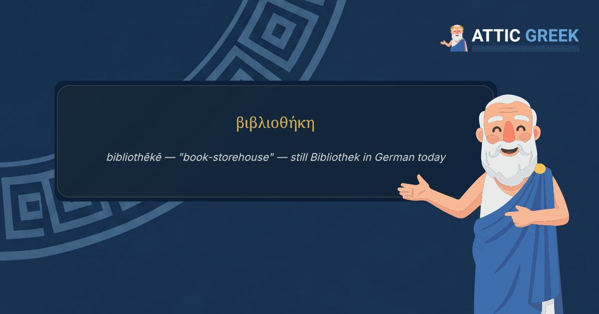

If you speak German, you already know more Ancient Greek than you think. It's tucked into words you use before your morning coffee is finished — words so ordinary you'd never stop to wonder where they came from.
That's true of English too, of course. But German holds onto a few of these words more tightly than English does, in small, wonderful ways we'll get to. First, let's just enjoy how much is there.
How did all this Greek end up in German in the first place?
Not by any single dramatic route. Mostly, it arrived the same way it arrived in English, French, and nearly every other European language: through Latin, which was the shared language of scholars, scientists, and the Church across Europe for well over a thousand years. Educated Latin already carried enormous amounts of Greek vocabulary inside it, borrowed centuries earlier when Rome absorbed Greek philosophy, medicine, and rhetoric wholesale. When German scholars wrote and taught in Latin, that Greek-inside-Latin vocabulary came along with them.
Then, starting in the Renaissance and picking up speed through the Enlightenment, something more direct happened: as new sciences, philosophies, and technologies needed new words, German scholars — like their counterparts across Europe — went straight to Greek roots to build them. This is why so many precise, technical-sounding German words are, underneath, just two or three ordinary Greek words stitched together.
Words you already know, without knowing you know them?
Here are a few, laid open at the root:
Philosophie (philosophy) comes from φιλοσοφία — φίλος ("love") plus σοφία ("wisdom"). Literally, the love of wisdom. Not a metaphor — that is genuinely what the word means, in both languages, unchanged for two and a half thousand years.
Demokratie (democracy) comes from δημοκρατία — δῆμος ("the people") plus κράτος ("power, rule"). Rule by the people. The Athenians who coined this word were describing their own new and strange experiment in government — a word built for one city that now names a form of government spoken about in every language on earth.
Mathematik (mathematics) comes from μάθημα, simply "that which is learned." Psychologie (psychology) comes from ψυχή ("soul" or "breath") and λόγος ("word, study, reason") — the study of the soul, before anyone had a less poetic name for the mind.
Theater (theatre) comes from θέατρον, "a place for watching." Drama comes straight from δρᾶμα, "a deed" or "an action" — because to the Greeks, a play was, first and foremost, something happening, not something read.
A few more, quickly, because there are so many: Charakter from χαρακτήρ (originally, an engraved mark, a stamp). Chaos straight from χάος, the primordial void before creation. Idee from ἰδέα. Symbol from σύμβολον. Melancholie (melancholy) from μελαγχολία — μέλας ("black") plus χολή ("bile"), a word that still carries an entire ancient theory of medicine folded inside it, the old belief that sadness was a physical imbalance of black bile in the body.
Say a few of these out loud, in German or in English, and something shifts. They stop being abstract terms you learned for an exam and start being small, very old sentences, still doing exactly the job they were built for.
Where German actually kept the Greek closer than English did?
This is the part I find genuinely delightful. In a couple of cases, German held onto the original Greek word for something so ordinary that English quietly swapped it out for something else.
Take the word for library. In German, it's Bibliothek — straight from βιβλιοθήκη (bibliothēkē), built from βιβλίον ("book") and θήκη ("a case, a place for storing something"). A book-storage-place. But English's everyday word, library, actually comes from Latin liber ("book") instead — a different root entirely. English does still have the Greek-derived word, tucked away in "bibliography" and "bibliophile," but for the ordinary, everyday building on the corner, German kept the Greek and English didn't.
The same thing happens with the word for pharmacy. German uses Apotheke, from ἀποθήκη (apothēkē), which simply meant "storehouse" in ancient Greek — originally for grain and wine, later, by the Middle Ages, for medicine. English kept this exact root too, but only in the old-fashioned word apothecary, the sort of word you now mostly meet in historical novels. The everyday English word, pharmacy, comes from a different Greek word instead, φαρμακεία (pharmakeía). Both languages inherited two Greek words for the same idea; German and English simply ended up keeping different ones as the "normal" one.
There's something quietly moving about this, if you let it sit for a second. A word for where you keep your books, or where you get your medicine, said every single day by millions of people who have never opened a page of Ancient Greek — and it is, underneath, still exactly the word an Athenian shopkeeper would have used two thousand years ago.
βιβλιοθήκη
bibliothēkē — "book-storehouse" — still Bibliothek in German today
A quick fact worth knowing?
Before Friedrich Nietzsche was the philosopher people quote today, he was a professor of Ancient Greek. In 1869, at just twenty-four years old — remarkably young for the position — he was appointed to the chair of classical philology at the University of Basel, in Switzerland. For a decade, until poor health forced his resignation in 1879, his actual day job was teaching students to read Greek language and literature closely and carefully. Some of his most distinctive ideas as a philosopher — his fascination with the Greek tragedians, his contrast between the "Apollonian" and "Dionysian" impulses in his first book, The Birth of Tragedy — grew directly out of that decade spent inside the Greek texts themselves, not apart from it.
It's a useful thing to remember: some of the most original thinking in modern philosophy started with someone who simply knew how to read the old language very, very well.
Meet the language behind the words you already use
Attic Greek teaches Ancient Greek from the alphabet up — 210 structured lessons, quizzes, flashcards, and annotated readings from Homer, Plato, and the great classical authors, with Socrates himself as your guide.
Start with 5 free lessons →Five lessons and the opening of the Odyssey, free forever. Then $4.99/month or $34.99/year.